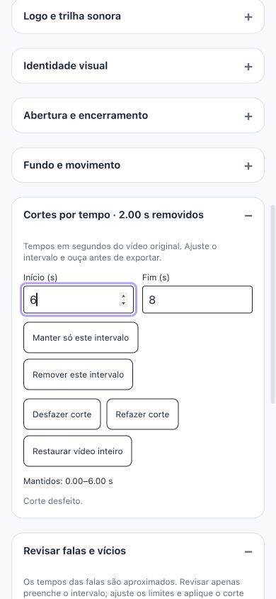

16/10/2026 · Implementação local, ainda sem publicação.
Os players agora reaplicam o modo de mídia ao iniciar ou retomar um vídeo. A revisão de clipes deixou de forçar mudo. O acompanhamento por voz libera solicitações de microfone atrasadas após cancelamento, evita aberturas duplicadas e ignora callbacks de reconhecedores antigos.
A interface fecha voz e transcrição ao exibir o resultado. A seleção de modo segue a Audio Session API, quando disponível; não força o alto-falante sobre fones conectados. O efeito no iPhone real ainda precisa de teste.
243 testes passaram em 28 arquivos após a correção de áudio. Build concluído. Lint sem erros, com um aviso de Fast Refresh já existente em outro arquivo de auditoria.
No editor real, remover 2–4 s do vídeo de 8 s gerou arquivo de 6,047 s. A prévia passou de 1,784 para 4 s sem reproduzir o intervalo removido, com áudio habilitado. Layout de 390 px sem rolagem horizontal.
Registro das verificações · Amostras da prévia · Abrir editor de teste (requer Vite)
Tempos da fala continuam estimados; não foi adicionada transcrição alinhada por palavra. A prévia mostra cortes e áudio original, enquanto efeitos e legendas são aplicados na exportação. Saída pelo alto-falante e comportamento nativo de iPhone/Android ainda exigem teste em aparelho.
